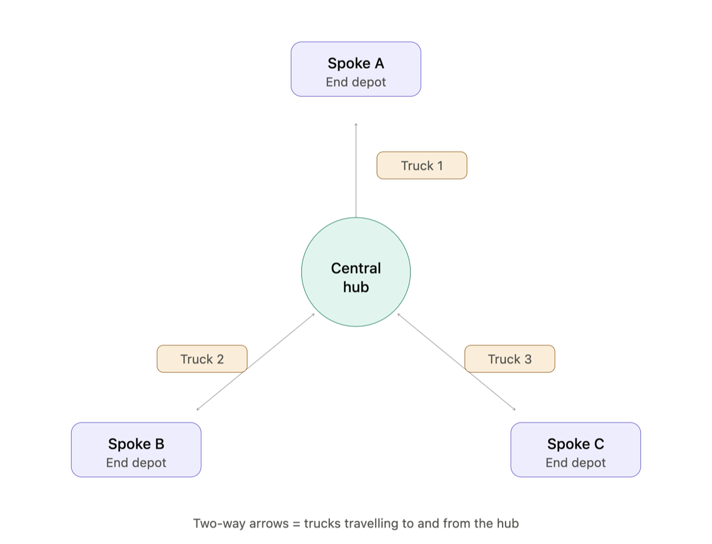
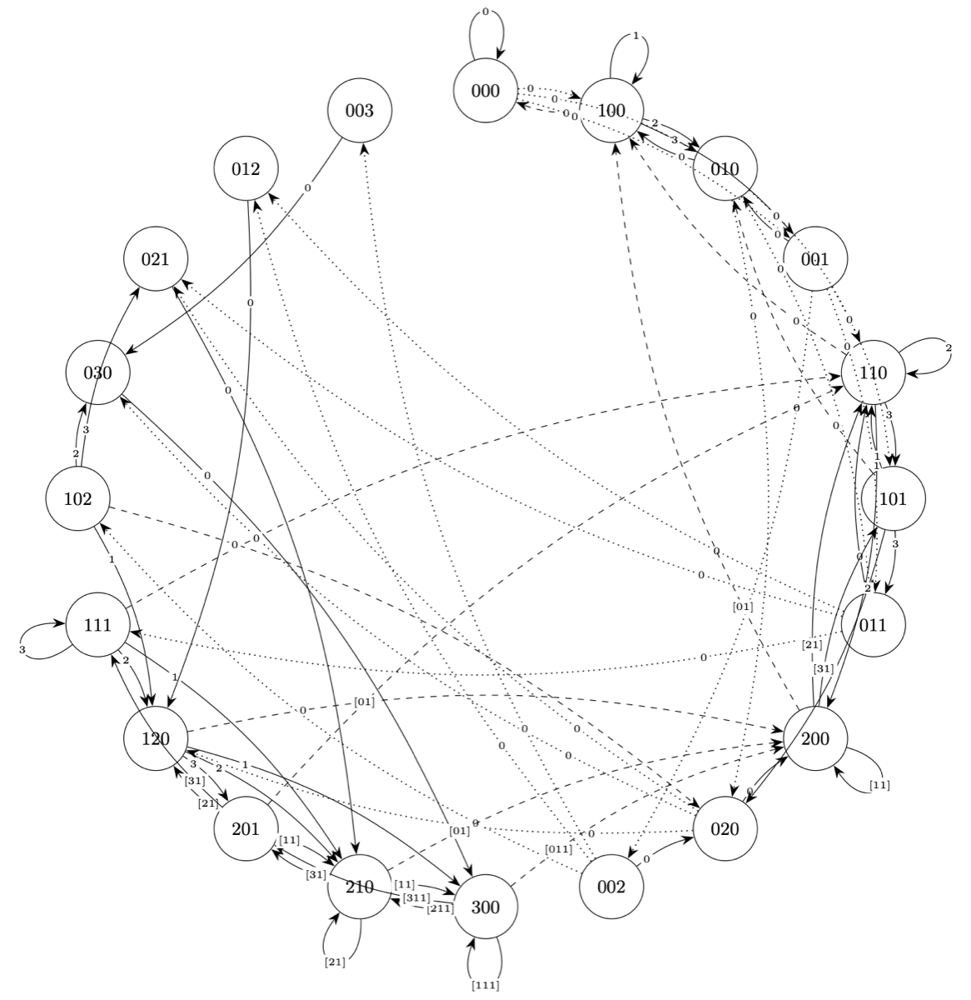
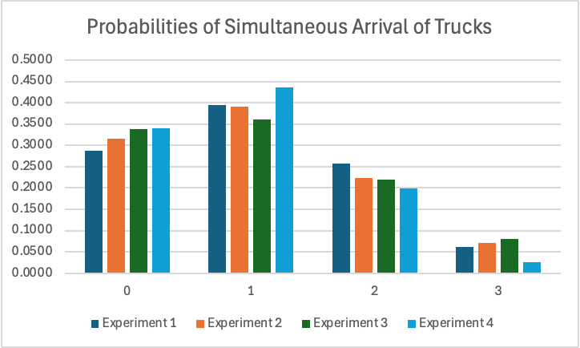
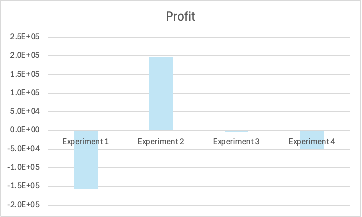

Project
A Master of Data Science research project that uses the mathematics of juggling to study when trucks pile up at a hub, and what extra unloading bays are worth.
A juggler throws balls so they land on future beats. A dispatcher sends trucks so they return to the hub at future hours. The project borrows the juggler's maths to describe the hub.

Trucks become balls, hours become beats and travel time becomes throw height; b trucks, max height h, B unloading bays.
A queue-based search lists every reachable arrival schedule and the throws, adds and drops that connect them.
Every allowed move out of a state gets equal probability, e.g. 1/4 for each of four options.
Gives the theoretical stationary distribution: the long-run share of time spent in each state.
100,000 steps from every starting state across 30 seeds, adding bay, delay and fixed costs and revenue per unloaded truck.
Simulated and theoretical distributions are compared, then average cost, revenue and profit are compared across the four experiments.
The main model, written J(≤3, 3, 1), has at most 3 trucks, a maximum travel time of 3 hours and 1 unloading bay.



The report also notes the model is small (three trucks, up to three bays) and assumes trucks are dispatched at random, whereas real dispatching is scheduled.